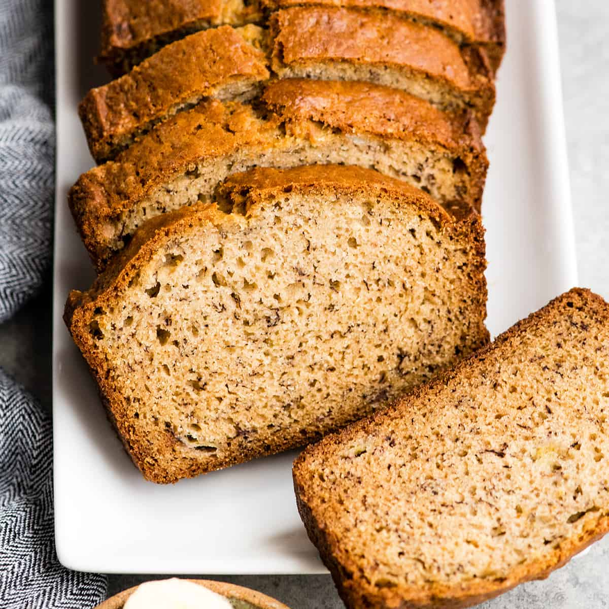

Time to use up those bananas you've left on the counter for weeks
Easy recipe? Yes. Delicious? Also yes.
Adapted from Elise Bauer's recipe on simplyrecipes.com
Ingredients
- 2-3 ripe bananas (frozen & thawed works too)
- 1⁄3 butter (melted)
- 1⁄2 tsp baking soda
- 1 pinch salt
- 3⁄4 sugar (or less, to taste)
- 1 egg
- 1 tsp vanilla extract
- 1 1⁄2 cups all-purpose flour
Instructions
- Preheat over to 350 degrees (F). Butter an 8 x 4 inch loaf pan.
- In a mixing bowl, mash the bananas until there are no large pieces left. Mix in the melted butter.
- Mix in the remaining ingredients. (Using a fork works fine)
- Pour the batter into the prepared pan and bake for 55 to 60 minutes, until a toothpick comes out clean.
- Flip onto a cooling rack and let sit for 5 minutes. Enjoy.
Return to top
Return to main page.